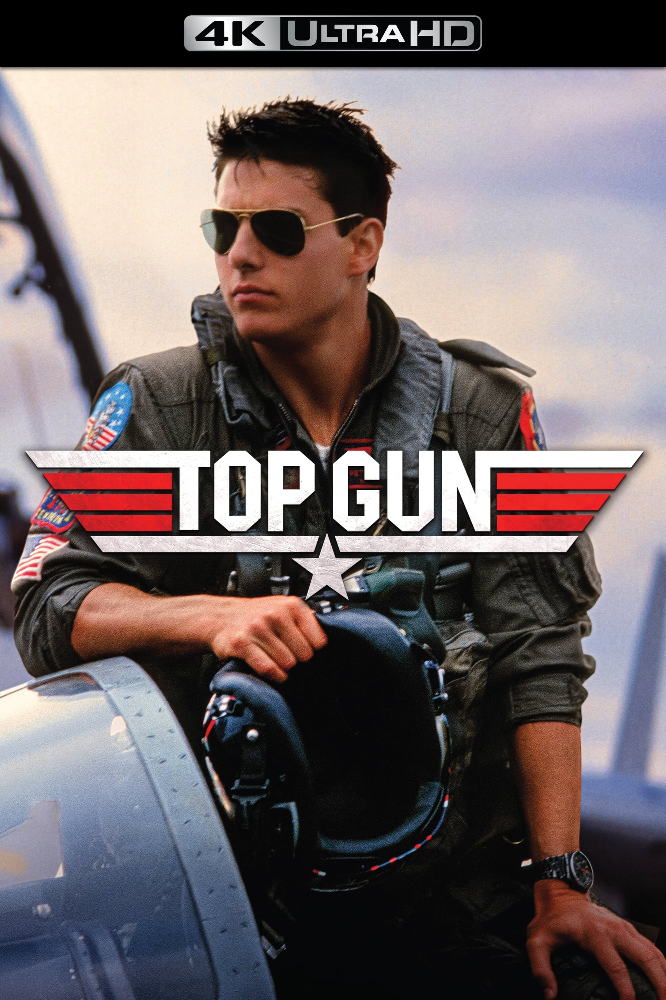
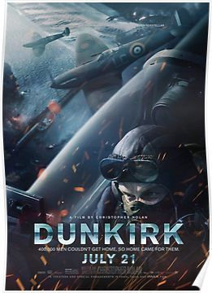

Top Gun (1986):
Directed by Tony Scott and starring Tom Cruise, this iconic film follows the training and relationships of Navy fighter pilots at the Top Gun Naval Fighter Weapons School.
The Right Stuff (1983):

Based on Tom Wolfe's book, this film, directed by Philip Kaufman, explores the early years of the U.S. space program, highlighting the lives of the test pilots involved.
Red Tails (2012):

Directed by Anthony Hemingway, this film tells the inspiring story of the Tuskegee Airmen, African American pilots who fought in World War II and faced discrimination despite their impressive combat record.
Dunkirk (2017):
Directed by Christopher Nolan, Dunkirk provides a gripping portrayal of the evacuation of Allied soldiers from the beaches of Dunkirk during World War II. While not strictly a pilot movie, it includes intense aerial sequences.
Black Hawk Down (2001):

Directed by Ridley Scott, this film recounts the Battle of Mogadishu, focusing on the actions of U.S. Army Rangers and Delta Force soldiers. While primarily ground-based, it does include helicopter pilots and intense aerial combat scenes.